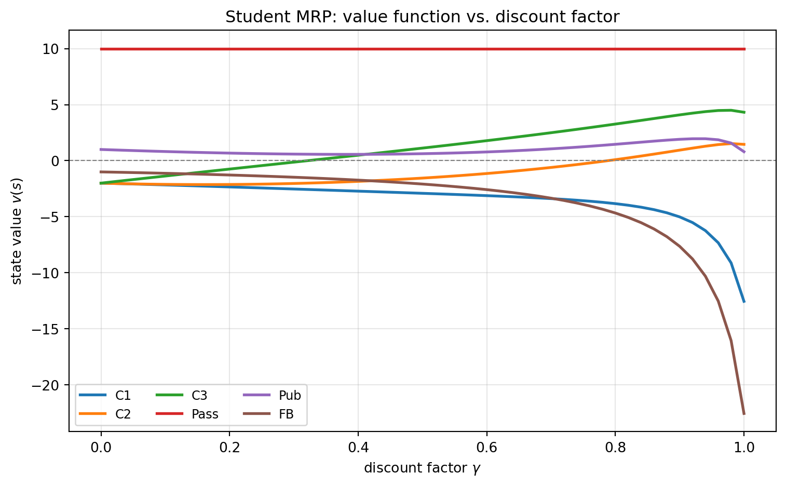

flowchart LR C1((Class 1)) -->|0.5| C2((Class 2)) C1 -->|0.5| FB((Facebook)) FB -->|0.9| FB FB -->|0.1| C1 C2 -->|0.8| C3((Class 3)) C2 -->|0.2| SL[Sleep] C3 -->|0.6| PA((Pass)) C3 -->|0.4| PU((Pub)) PA -->|1.0| SL PU -->|0.2| C1 PU -->|0.4| C2 PU -->|0.4| C3
Markov Decision Processes
1 큰 그림: 왜 MDP인가
MDP는 완전 관측 가능(fully observable) 환경을 형식화하는 표준 틀이다. “현재 상태가 미래를 결정하는 데 필요한 모든 정보를 담고 있다”는 Markov 성질 위에, 보상(reward) 과 행동(action) 을 차례로 얹어 나가는 구조를 갖는다.
\underbrace{\langle S, P\rangle}_{\text{Markov Process}} \;\xrightarrow{+\,R,\;\gamma}\; \underbrace{\langle S, P, R, \gamma\rangle}_{\text{MRP}} \;\xrightarrow{+\,A}\; \underbrace{\langle S, A, P, R, \gamma\rangle}_{\text{MDP}}
중요한 문장으로 압축한 핵심
MDP에 정책 \pi를 고정하면 즉시 MRP가 되고, MRP는 다시 Markov Process가 된다. 따라서 정책 평가(evaluation)는 언제나 “유도된 MRP의 가치 계산”으로 환원된다.
2 Markov Process
2.1 Markov 성질
\mathbb{P}[S_{t+1}\mid S_t] = \mathbb{P}[S_{t+1}\mid S_1,\dots,S_t]
상태 S_t는 미래에 대한 충분통계량(sufficient statistic) 이다. 일단 상태를 알면 과거 history는 버려도 된다.
2.2 상태 전이 행렬
P_{ss'} = \mathbb{P}[S_{t+1}=s'\mid S_t=s], \qquad \sum_{s'} P_{ss'} = 1 \;\;(\text{각 행의 합}=1)
Markov Process (Chain) 는 튜플 \langle S, P\rangle — 상태 집합 S와 전이 행렬 P만으로 정의된다. 보상도 행동도 없다.
2.3 Student Markov Chain 예제
표본 경로(sample episode) 예: C1 → C2 → C3 → Pass → Sleep, C1 → FB → FB → C1 → C2 → Sleep 등.
3 Markov Reward Process (MRP)
MRP =\langle S, P, R, \gamma\rangle — Markov chain에 가치(value) 를 붙인 것.
- 보상 함수: \;R_s = \mathbb{E}[R_{t+1}\mid S_t = s]
- 할인율: \;\gamma \in [0,1]
3.1 Return (누적 할인 보상)
G_t = R_{t+1} + \gamma R_{t+2} + \gamma^2 R_{t+3} + \cdots = \sum_{k=0}^{\infty}\gamma^k R_{t+k+1}
노트표기 주의
상태 s에 들어가서 받는 보상의 인덱스는 R_{t+1}이다. G_t는 확률변수이고, 그 기댓값이 가치함수 v(s)이다.
3.2 왜 할인하는가 — \gamma의 정당화
- 수학적 편의 (수렴 보장)
- 순환(cyclic) Markov process에서 무한 return 방지
- 미래 불확실성을 모형이 완전히 담지 못함
- 금전적 보상이면 즉시 보상이 이자 측면에서 유리
- 동물/인간이 즉시 보상을 선호
- 모든 경로가 종료(terminate)하면 \gamma=1 (undiscounted)도 가능
3.3 가치함수와 Bellman Equation
v(s) = \mathbb{E}[G_t \mid S_t = s]
Return을 즉시 보상 + 할인된 다음 상태 가치로 분해한다.
\begin{aligned} v(s) &= \mathbb{E}[R_{t+1} + \gamma G_{t+1}\mid S_t = s] \\ &= \mathbb{E}[R_{t+1} + \gamma\, v(S_{t+1})\mid S_t = s] \\ &= R_s + \gamma \sum_{s'} P_{ss'}\, v(s') \end{aligned}
분해의 핵심은 \mathbb{E}[G_{t+1}\mid S_{t+1}=s']=v(s')이고 tower property로 한 칸만 펼치는 것이다.
3.4 행렬형과 직접 해
v = R + \gamma P v \;\;\Longrightarrow\;\; (I-\gamma P)\,v = R \;\;\Longrightarrow\;\; v = (I-\gamma P)^{-1}R
- 선형 방정식이므로 직접 풀 수 있음, 계산복잡도 O(n^3) (n=|S|).
- \gamma<1이면 \rho(\gamma P)<1이므로 (I-\gamma P)는 가역. 큰 n에서는 DP / Monte-Carlo / TD 같은 반복법을 사용한다.
3.5 \gamma에 따른 가치 전파 시각화
흡수상태 Sleep을 종단(terminal, v=0)으로 두고 전이상태 집합 \{C1, C2, C3, \text{Pass}, \text{Pub}, FB\}에 대해 v_T = (I-\gamma Q)^{-1} R_T 를 직접 푼다. 여기서 Q는 전이상태끼리의 부분확률행렬이며, 이 경우 \gamma=1에서도 \rho(Q)<1이라 역행렬이 존재한다.
코드
import numpy as np
import matplotlib.pyplot as plt
states = ["C1", "C2", "C3", "Pass", "Pub", "FB"]
idx = {s: i for i, s in enumerate(states)}
Q = np.zeros((6, 6))
Q[idx["C1"], idx["FB"]] = 0.5; Q[idx["C1"], idx["C2"]] = 0.5
Q[idx["C2"], idx["C3"]] = 0.8 # C2 -> Sleep 0.2 (terminal)
Q[idx["C3"], idx["Pub"]] = 0.4; Q[idx["C3"], idx["Pass"]] = 0.6
# Pass -> Sleep 1.0 (terminal): 행 전체 0
Q[idx["Pub"], idx["C1"]] = 0.2
Q[idx["Pub"], idx["C2"]] = 0.4
Q[idx["Pub"], idx["C3"]] = 0.4
Q[idx["FB"], idx["FB"]] = 0.9; Q[idx["FB"], idx["C1"]] = 0.1
R = np.array([-2, -2, -2, 10, 1, -1], dtype=float)
gammas = np.linspace(0.0, 1.0, 51)
V = np.array([np.linalg.solve(np.eye(6) - g * Q, R) for g in gammas])
fig, ax = plt.subplots(figsize=(8, 5))
for j, s in enumerate(states):
ax.plot(gammas, V[:, j], marker="", linewidth=2, label=s)
ax.axhline(0, color="gray", linewidth=0.8, linestyle="--")
ax.set_xlabel(r"discount factor $\gamma$")
ax.set_ylabel(r"state value $v(s)$")
ax.set_title("Student MRP: value function vs. discount factor")
ax.legend(ncol=3, fontsize=9)
ax.grid(alpha=0.3)
plt.tight_layout()
plt.show()
힌트읽는 법
\gamma=0에서는 v(s)=R_s (즉시 보상 그 자체)다. \gamma를 키울수록 미래, 특히 R=+10인 Pass의 영향이 앞선 상태로 전파되어 C3, C2의 가치가 올라간다. 반대로 자기 자신으로 0.9 확률로 머무는 FB는 \gamma가 커질수록 R=-1이 길게 누적되어 급격히 음수로 발산하는 경향을 보인다 (\gamma=1에서 v(FB)\approx -22.5).
| \gamma | C1 | C2 | C3 | Pass | Pub | FB |
|---|---|---|---|---|---|---|
| 0.0 | -2.00 | -2.00 | -2.00 | +10.00 | +1.00 | -1.00 |
| 0.5 | -2.91 | -1.55 | +1.12 | +10.00 | +0.62 | -2.08 |
| 0.9 | -5.01 | +0.94 | +4.09 | +10.00 | +1.91 | -7.64 |
| 1.0 | -12.54 | +1.46 | +4.32 | +10.00 | +0.80 | -22.54 |
4 Markov Decision Process (MDP)
MDP =\langle S, A, P, R, \gamma\rangle — MRP에 행동(decision) 을 추가한 것.
P_{ss'}^{a} = \mathbb{P}[S_{t+1}=s'\mid S_t=s,\, A_t=a], \qquad R_s^{a} = \mathbb{E}[R_{t+1}\mid S_t=s,\, A_t=a]
4.1 정책 (policy)
\pi(a\mid s) = \mathbb{P}[A_t = a \mid S_t = s]
정책은 현재 상태에만 의존하며(stationary), 시간 불변이다. 정책이 history가 아니라 상태에만 의존해도 충분한 이유가 곧 Markov 성질이다.
4.2 Student MDP 예제
flowchart LR
S1((Class 1))
S2((Class 2))
S3((Class 3))
FB((Facebook))
SL[Sleep]
PUB{{"Pub (R=+1)"}}
S1 -->|"Facebook, R=-1"| FB
FB -->|"Facebook, R=-1"| FB
FB -->|"Quit, R=0"| S1
S1 -->|"Study, R=-2"| S2
S2 -->|"Sleep, R=0"| SL
S2 -->|"Study, R=-2"| S3
S3 -->|"Study, R=+10"| SL
S3 -->|"Pub"| PUB
PUB -->|0.2| S1
PUB -->|0.4| S2
PUB -->|0.4| S3
노트
MRP에서 “환경이 던지던” 분기 확률 일부가, MDP에서는 “내가 선택하는” 행동으로 바뀐다. Pub 행동만 결과가 확률적(0.2/0.4/0.4)이고, 나머지 행동은 결정적 전이를 갖는다.
4.3 정책 고정 → MRP로 환원
정책 \pi를 고정하면 상태열 S_1, S_2,\dots은 Markov process \langle S, P^\pi\rangle, 상태-보상열은 MRP \langle S, P^\pi, R^\pi, \gamma\rangle가 된다.
P^\pi_{ss'} = \sum_{a} \pi(a\mid s)\,P_{ss'}^{a}, \qquad R^\pi_{s} = \sum_{a} \pi(a\mid s)\,R_s^{a}
4.4 두 가지 가치함수
v_\pi(s) = \mathbb{E}_\pi[G_t\mid S_t=s], \qquad q_\pi(s,a) = \mathbb{E}_\pi[G_t\mid S_t=s,\, A_t=a]
v_\pi는 상태가치, q_\pi는 (상태, 행동) 가치다. 둘의 구분은 표기 정확성과 직결된다.
4.5 Bellman Expectation Equation
v와 q를 서로 한 단계씩 펼치는 네 관계가 핵심이다.
\begin{aligned} v_\pi(s) &= \sum_a \pi(a\mid s)\, q_\pi(s,a) \\[2pt] q_\pi(s,a) &= R_s^a + \gamma \sum_{s'} P_{ss'}^a\, v_\pi(s') \\[2pt] v_\pi(s) &= \sum_a \pi(a\mid s)\Big(R_s^a + \gamma \sum_{s'} P_{ss'}^a\, v_\pi(s')\Big) \\[2pt] q_\pi(s,a) &= R_s^a + \gamma \sum_{s'} P_{ss'}^a \sum_{a'} \pi(a'\mid s')\, q_\pi(s',a') \end{aligned}
행렬형:
v_\pi = R^\pi + \gamma P^\pi v_\pi \;\;\Longrightarrow\;\; v_\pi = (I - \gamma P^\pi)^{-1} R^\pi
MRP와 완전히 같은 구조다.
5 최적성 (Optimality)
5.1 최적 가치함수
v_*(s) = \max_\pi v_\pi(s), \qquad q_*(s,a) = \max_\pi q_\pi(s,a)
MDP가 “풀렸다”는 것은 곧 v_* (또는 q_*)를 안다는 뜻이다.
5.2 최적 정책 정리
모든 MDP에 대해 다음이 성립한다.
- 다른 모든 정책보다 좋거나 같은 최적 정책 \pi_*가 반드시 존재한다.
- 모든 최적 정책은 최적 상태가치 v_{\pi_*}(s)=v_*(s)를 달성한다.
- 모든 최적 정책은 최적 행동가치 q_{\pi_*}(s,a)=q_*(s,a)를 달성한다.
5.3 최적 정책 찾기
q_*를 알면 즉시 greedy하게 결정적(deterministic) 정책을 얻는다.
\pi_*(a\mid s) = \begin{cases} 1 & \text{if } a = \arg\max_{a\in A} q_*(s,a)\\ 0 & \text{otherwise} \end{cases}
중요
결정적 최적 정책은 항상 존재한다. 즉 q_*만 구하면 MDP는 끝난다.
5.4 Bellman Optimality Equation
\begin{aligned} v_*(s) &= \max_a q_*(s,a) \\[2pt] q_*(s,a) &= R_s^a + \gamma \sum_{s'} P_{ss'}^a\, v_*(s') \\[2pt] v_*(s) &= \max_a \Big(R_s^a + \gamma \sum_{s'} P_{ss'}^a\, v_*(s')\Big) \\[2pt] q_*(s,a) &= R_s^a + \gamma \sum_{s'} P_{ss'}^a \max_{a'} q_*(s',a') \end{aligned}
5.5 Expectation vs. Optimality
| 구분 | 연산자 | 선형성 | 해법 |
|---|---|---|---|
| Bellman Expectation | \sum_a \pi(a\mid s)\,(\cdot) (정책 평균) | 선형 | 직접 해 (I-\gamma P^\pi)^{-1}R^\pi |
| Bellman Optimality | \max_a(\cdot) | 비선형 | 직접 해 없음 → 반복법 |
\max 때문에 최적성 방정식은 닫힌 형 해가 없고, Value Iteration, Policy Iteration, Q-learning, Sarsa 같은 반복 알고리즘으로 푼다.
6 Extensions to MDPs
6.1 무한 · 연속 MDP
- 가산 무한(countably infinite) 상태/행동: 대체로 그대로 확장 가능
- 연속 상태/행동: 선형-2차(LQR) 모델에서는 닫힌 형 해 존재
- 연속 시간: 편미분방정식 필요 → HJB(Hamilton-Jacobi-Bellman) 방정식, Bellman 방정식에서 time-step \to 0 극한
6.2 POMDP (부분 관측)
\langle S, A, O, P, R, Z, \gamma\rangle. 상태가 숨겨진 MDP = 행동이 있는 HMM.
- Belief state b(h): history h가 주어졌을 때 상태에 대한 확률분포
- POMDP는 (무한) history tree 또는 (무한) belief state tree 로 환원 가능
6.3 Undiscounted / 평균 보상 MDP
- Ergodic Markov process = recurrent(각 상태 무한 방문) + aperiodic(주기 없음)
- 어떤 정책 \pi가 유도하는 chain이 항상 ergodic이면 MDP가 ergodic
- ergodic MDP는 시작 상태와 무관한 단위 시간당 평균 보상 \rho^\pi를 가짐
- 대응되는 average-reward Bellman equation (차분 가치함수 differential value function 사용)이 존재
7 기말 대비 체크리스트
경고반드시 손으로 쓸 수 있어야 하는 것
- v=(I-\gamma P)^{-1}R 유도 — Bellman 분해부터 행렬형까지. (MRP/leaky bucket의 정상상태 · 평균지연 계산과 같은 근육)
- Expectation vs. Optimality 방정식 4종 — v\leftrightarrow q 상호 전개. \max vs. \sum_a\pi가 선형/비선형을 가르는 지점을 설명할 수 있을 것.
- \gamma 정당화 6가지 단답.
- 결정적 최적 정책 존재성 + q_*로부터 greedy 추출 논리.
- 정책 고정 → MRP 환원 (P^\pi, R^\pi 정의) — 개념 서술형.
기말의 leaky bucket · contention 문제처럼 “Markov chain을 직접 세우고 정상상태확률을 푸는” 능력이 핵심이고, 그 토대가 이 챕터의 가치 계산 구조다.